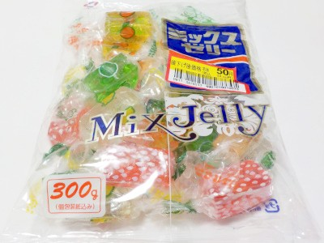

アダチ製菓のミックスゼリー
2022/08/12

昔からあるタイプの寒天ゼリーです。
近ごろは果汁多め等の高級な感じのグミみたいな寒天ゼリーが多くありますが、これみたいに水あめ感のあるタイプのものもいいなと思いました。
水あめって夏菓子っぽいので、暑い時期の糖分補給に丁度いいです。この商品は甘すぎないので食べやすかったです。
岐阜県各務原市鵜沼各務原町5丁目251-1
2022/08/12

昔からあるタイプの寒天ゼリーです。
近ごろは果汁多め等の高級な感じのグミみたいな寒天ゼリーが多くありますが、これみたいに水あめ感のあるタイプのものもいいなと思いました。
水あめって夏菓子っぽいので、暑い時期の糖分補給に丁度いいです。この商品は甘すぎないので食べやすかったです。